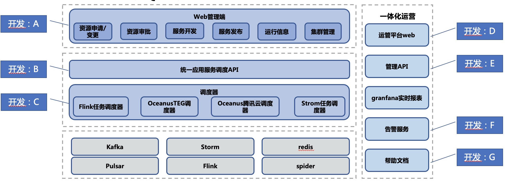
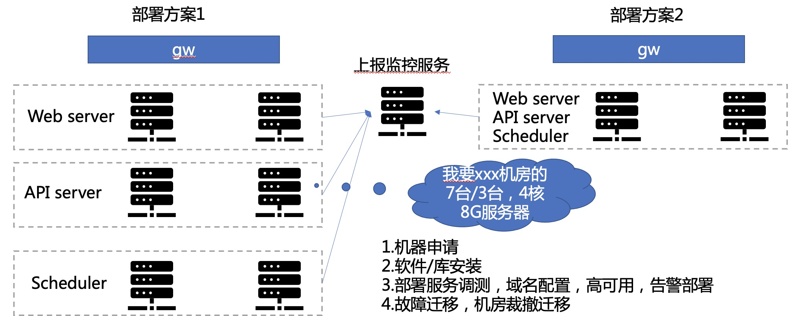
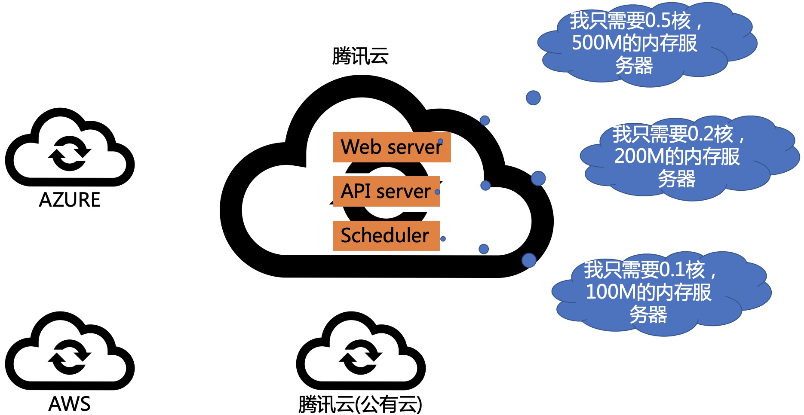
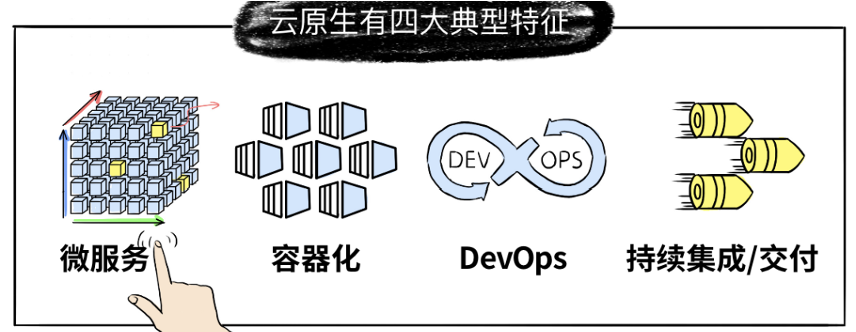
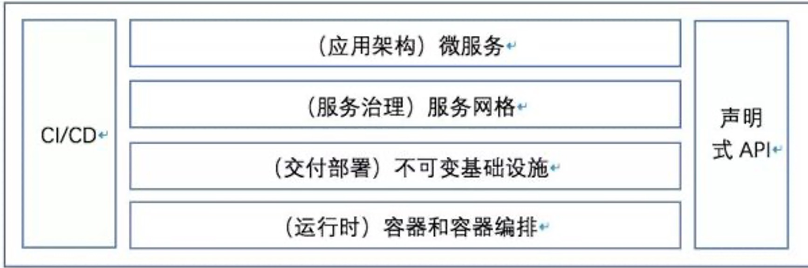

前言
9 月初给 BG 的新人开了一门课，专门来讲云原生技术，云原生技术从出现到现在按最早的时间出现来说也是有 10 多年了。尤其是这几年火热的不得了，但是 cloud native 这个外文词翻译成中文 “云原生” 就更加的不好理解，再加上本身这个词的定义在发展中又有多次的变化，导致很多学习这块技术的同学都感觉是云里雾里，不知所谓。
所以根据我对这门技术的认识，我开了这门课，一方面我认为我的认识还算比较到位，另一方面我认为目前的新人必须要学习和了解云原生技术，这是目前底层技术发展的大趋势。非常有必要学习和了解，而且我在内部也是致力于推动云原生技术的落地。在推动的过程中也很费劲，很多人看不到这场技术变革的意义和价值，这是非常让人感慨的。
软件部署模式
这里我先不直接说什么云原生技术，我们先来看看软件部署模式在云原生下的方式，先直观感受一下云上技术带来的变化。如果没有直观的感觉，大家都不好理解云上技术带来的便利。
案例
以我内部一个平台系统的简化架构为例： 特点：
- 系统稍微复杂一点，相关模块较多。
- 开发人员也较多，根据不同的技术栈分了多个人开发。 
传统的部署方式
下面是我们传统的部署方式，可以看到就是直接申请机器，并且做高可用互备的部署，大概需要3台到7台机器不等。遇到机器坏了也是要申请机器进行替换，再从新部署和更新路由等信息。 
云上的部署方式
下面是云上的部署方式，因为是一个内部系统，访问人数一天也就是几百人，qps并没有多大，也并不怎么消耗资源，测试环境每个模块部署只分配 0.1 核的资源，线上环境 0.1～0.5 核左右。内存就不用说了，需要的更少。CPU 的需要总共下来这么多模块也就不到 1 核资源搞定，而且不用我做备份。云平台帮我搞定，我只需要申请使用我真是需要的资源就好了。 
案例总结
从这里大家可以看出云上方式和传统方式的一点区别了吧。
总结一下：案例中我们真实需要的是什么？我们只是需要 CPU，内存和网络这些必要的资源，让我们的服务能运行起来，并且可以通过网络进行访问。
我们真实需要机器吗？扪心自问，我认为我们可以不要机器，或者说我们不关心机器，我们需要的是计算和网络资源。如果有地方可以提供高可用的计算和网络资源，我就不需要关心什么机器了。人总是这样，要解决一个问题，就需要找另外的工具和资源，又会想到能提供这种工具和资源的东西是什么，再去找，这样不断的寻找解决办法，最终可能就会形成思维定势，而忘记了最直接的解决方式。
所以在计算这块，云提供了最纯粹的解决方式，要 CPU 就给 CPU，要内存就给内存，要网络就给网络，给你你真正想要的。
云原生
云原生是一个组合词，英文 “Cloud Native”。Cloud 是指云平台，是一堆资源的组合，进行抽象的表示，在最上层提供了抽象接口可以让用户无需关心底层就可以使用这堆资源。在上面的案例就是说的这种使用方式。
Native 表示应用程序从设计之初即考虑到云的环境，原生为云而设计，在云上以最佳姿势运行，充分利用和发挥云平台的弹性+分布式优势。通过这种设计让应用可以使用好云计算基础设施，使云计算发挥最大能力。
这里也要多啰嗦一下，再好的技术和平台，使用的姿势不对也难以很好的发挥价值，甚至会带来损失和更大的灾难。
所以这里也可以说云原生(Cloud Native)是一种能充分利用云计算优势对应用程序进行设计、实现、部署、交付和操作的应用架构方法。，是一套技术体系和方法论。使用方法和姿势不对，再好的云原生也不能解决你的问题。
云原生计算加速了应用与基础设施资源之间的解耦，通过定义开放标准，向下封装资源，将复杂性下沉到基础设施层；向上支撑应用，让开发者更关注业务价值。
云原生的历史
云原生技术一直在不断地变化和发展，关于云原生的定义也在不断地迭代和更新，不同的社区组织或公司对云原生也有自己的理解和定义。
早期定义
早在 2013 年，来自 Pivotal 公司的 Matt Stine 编写了《迁移到云原生架构》，就提出了云原生应用架构应该具备的几个主要特征
- 符合12-Factor应用(Twelve-Factor Applications)
- 面向微服务架构(Microservices)
- 自服务敏捷基础设施(Self-Service Agile Infrastructure)
- 基于API的协作(API-Based Collaboration)
- 抗脆弱性(Antifragility)
云原生应用的12因素：
- 基准代码：一份基准代码，多份部署
- 依赖：显示声明依赖关系
- 配置：应用配置存储在环境中，与代码分离
- 后端服务：将通过网络调用的其他后端服务当作应用的附加资源
- 构建、发布、运行：严格分离构建、发布和运行
- 进程：以一个或多个无状态进程运行应用
- 端口绑定：通过端口绑定提供服务
- 并发：通过进程模型进行扩展
- 易处理：快速启动和优雅终止的进程可以最大化应用的健壮性
- 开发环境和线上环境一致性：尽可能保证开发环境、预发环境和线上环境的一致性
- 日志：把日志当作事件流的汇总
- 管理进程：把后台管理任务当作一次性进程运行
这里可以看出来 12-Factor 中大多数的特征是相对接地气的可以操作落地的，而且其它的相对较为模糊或者说是较为笼统。这里我认为是在定义发展过程中是需要不断提炼的。但是我认为这个和云和云原生的关系还不是很大。
云原生定义 1 次升级
在 2017 年 10 月，Matt Stine 则对云原生的定义做了小幅调整，认为 Cloud Native Architectures 应该具有以下六个特质：
- 模块化(Modularity)
- 可观测性(Observability)
- 可部署性(Deployability)
- 可测试性(Testability)
- 可处理性(Disposability)
- 可替换性(Replaceability)
这次的定义相对上面是更加抽象的，而且很多在敏捷开发中就已经是有的内容。所以这里我仍然认为和云和云原生的关系还没有真正体现出来。
云原生定义 2 次升级
在 2015 年 12 月以 Google 为首的一波公司，成立了一个基金会组织 CNCF（Cloud Native Computing Foundation）。说是致力于托管和运营云原生项目，吸纳开源社区和合作伙伴。致力于维护一个厂商中立的云原生生态系统，目前已经是云原生技术最大的推动者。
CNCF 2018后对云原生的定义是：
云原生计算基金会对云原生的定义：云原生技术有利于各组织在公有云、私有云和混合云等新型动态环境中构建和运行可弹性扩展的应用。云原生的代表技术包括容器、服务网格、微服务、不可变基础设施和声明式API。这些技术能够构建容错性好、易于管理和便于观察的松耦合系统。结合可靠的自动化手段，云原生技术使工程师能够轻松地对系统作出频繁和可预测的重大变更。
云原生的代表技术包括容器、服务网格、微服务、不可变基础设施和声明式API。这些技术能够构建容错性好、易于管理和便于观察的松耦合系统。结合可靠的自动化手段，云原生技术使工程师能够轻松地对系统做出频繁和可预测的重大变更。
CNCF在定义中给出了云原生的关键技术：容器、服务网格、微服务、不可变基础设施和声明式API，是目前云原生应用的最佳实践。
Pivotal 公司对云原生的最新定义为 4 个要点：DevOps、持续交付、微服务、容器。如下图。

这次的定义和总结，我认为才真正把云，云原生和应用联系起来了。所以我认为这个定义是相对比较清晰合理的，从而能真正指导了云原生技术的发展。从另外一个角度可以说：一个明确的定义可以推动一个技术能更好的发展。
总结
看了上面的介绍，大家也看出了，对于云原生的明确定义到目前还只是一个大概，定义中都说具有某些特征。但是从另一方面来看，具有的这些特征都还是比较典型的。
我从网上看到下面这个图的时候，感觉更能表达云原生的全貌和层次关系。所以我认为大家学习云原生技术可以参考这个图。 
对于这个图的详细解读，我准备在下篇中来进行。
再记
我是一定相信云原生技术是未来的技术方向，在很多地方具有革命性质的意义。
在去年北京的 MPD 大会的一个讲师分享会上我给大家分享了秦始皇和李斯推动的书同文，车同轨，统一度量衡的事情，我就提到目前 CNCF 正在技术界做这样的事情，让我们的服务可以几乎无差别的在全世界的任何云上跑。
让我们一起一边期待一边努力推动这项变革的发生和发展。
关注「黑光技术」，关注大数据+微服务